Every due date out of your syllabi, a start date for every big assignment, three school things a day. A 32-page undated student planner and a 127-page 18-week tap-to-jump semester file. Ink-saving black & white for US Letter + A4, plus an iPad Pastel edition with side tabs at the same price.
From Three Things Planners, the planner imprint of Hustle Studio. New shop, no reviews yet.
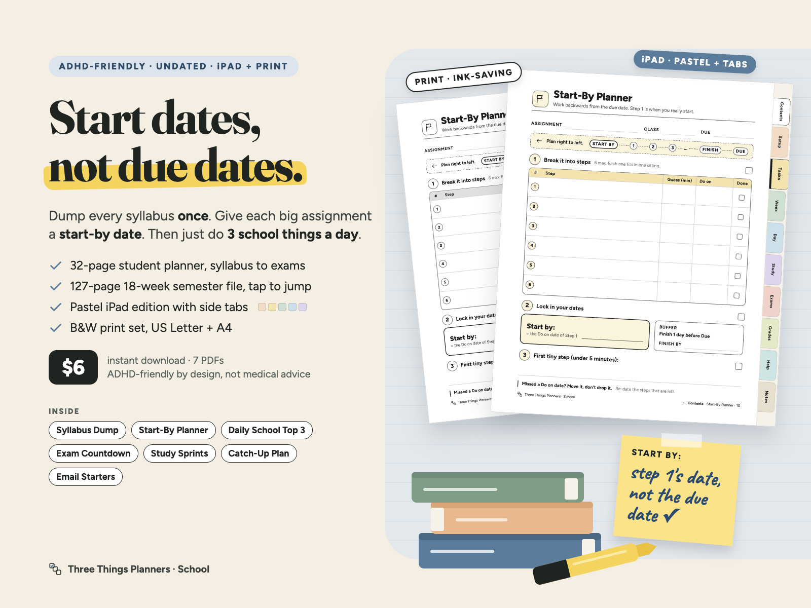
$6.00 USD, one-time payment, instant download. No subscription.
Buy now: $6 one-time Not sure yet? Get 3 real pages free (PDF, no email)🔒 Secure checkout by Waffo Pancake, our merchant of record: it takes the payment, handles tax and sends your receipt; we never see your card details. Checkout shows the product as "ADHD-Friendly Student Planner: Syllabus Dump to Start-By Dates", $6.00.
Satisfaction guarantee: 14-day full refund, no questions asked. If the planner doesn't work for you, email Three Things Planners support at chenphien@gmail.com within 14 days of purchase with your order email. A real person reads that inbox; we aim to reply within 2 business days, and the refund goes back to your original payment method through Waffo Pancake, our merchant of record (see Terms).
Try before you buy: the free 3-page sample (PDF) has a filled-in Start-By Planner example ("History essay, 1,500 words"), a blank Daily School Top 3 and a blank Brain Dump, US Letter. No email needed.
A new shop, honestly. We're new and have no reviews yet, and we won't invent any. The free sample is there so you can print real pages first.
Every image is rendered from the real planner pages (iPad Pastel and print). No buyer photos or reviews yet. The free sample lets you print three real pages before you pay.
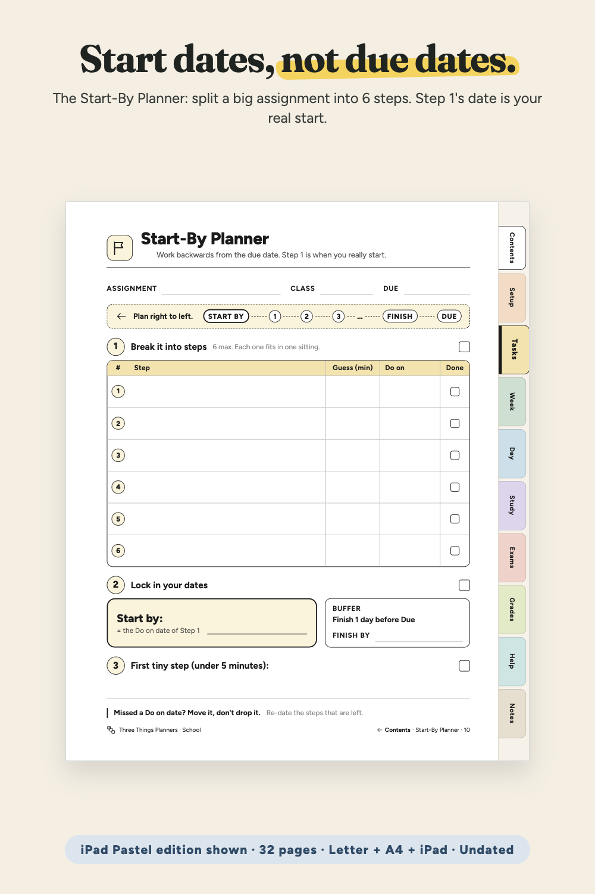
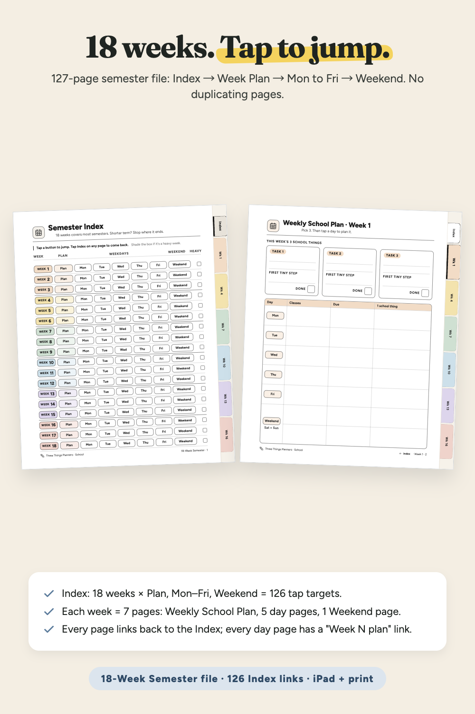
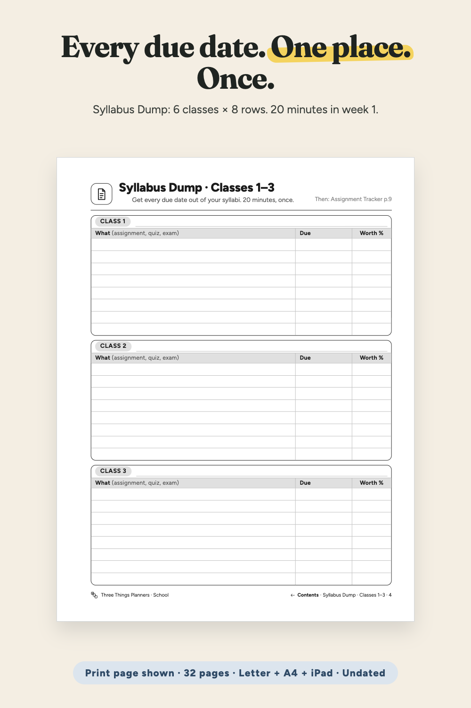
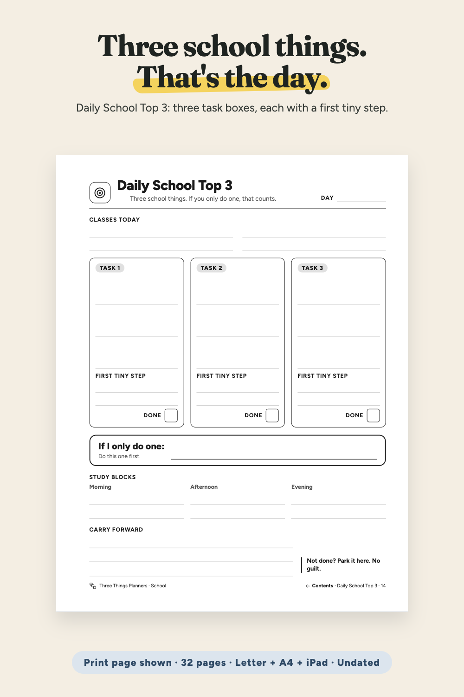
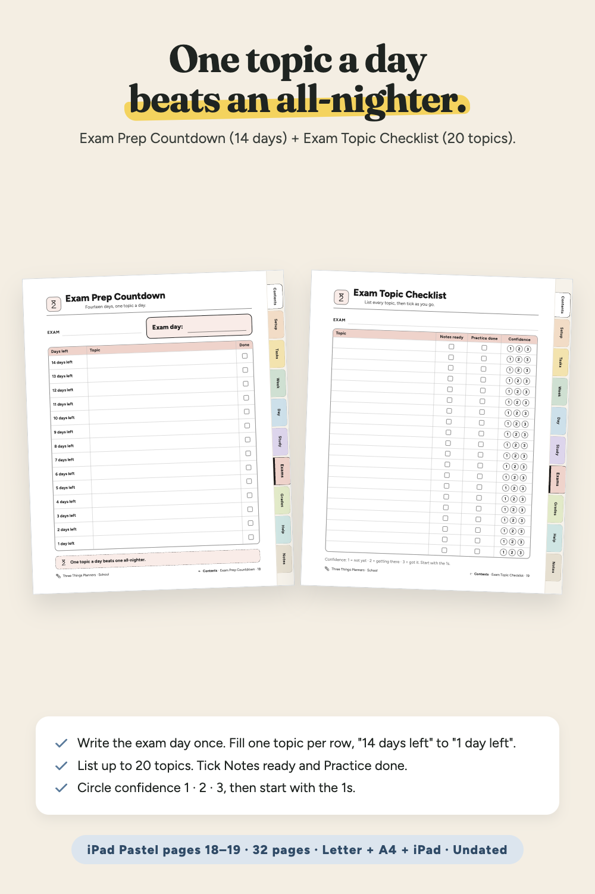
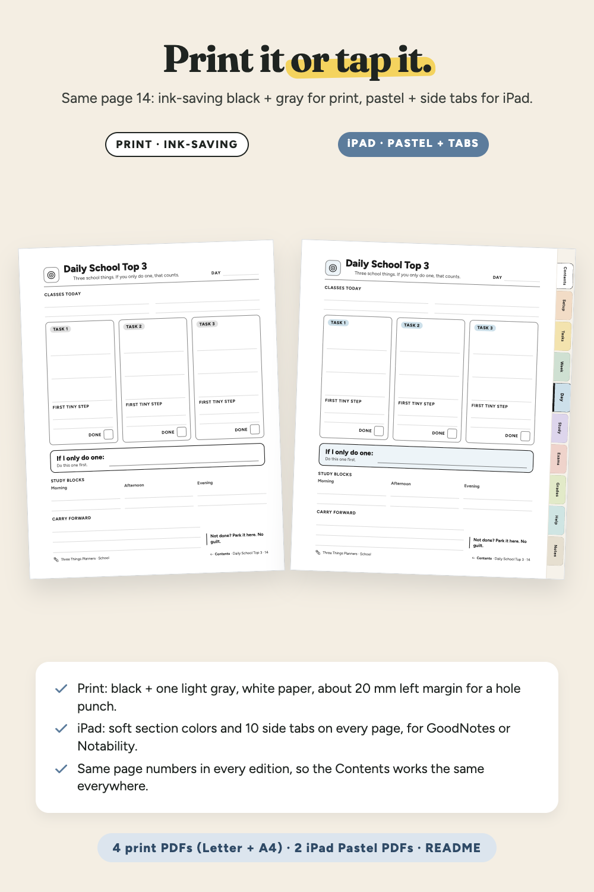
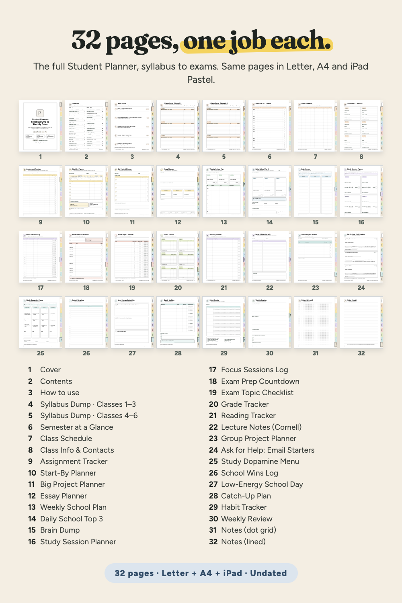
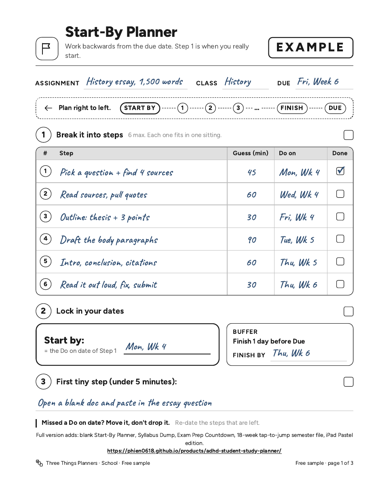
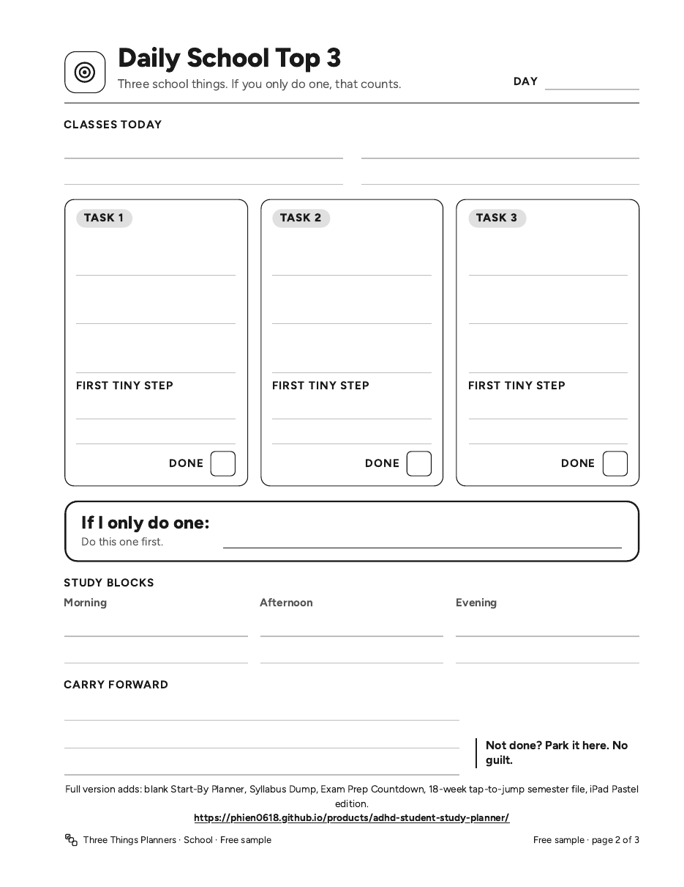
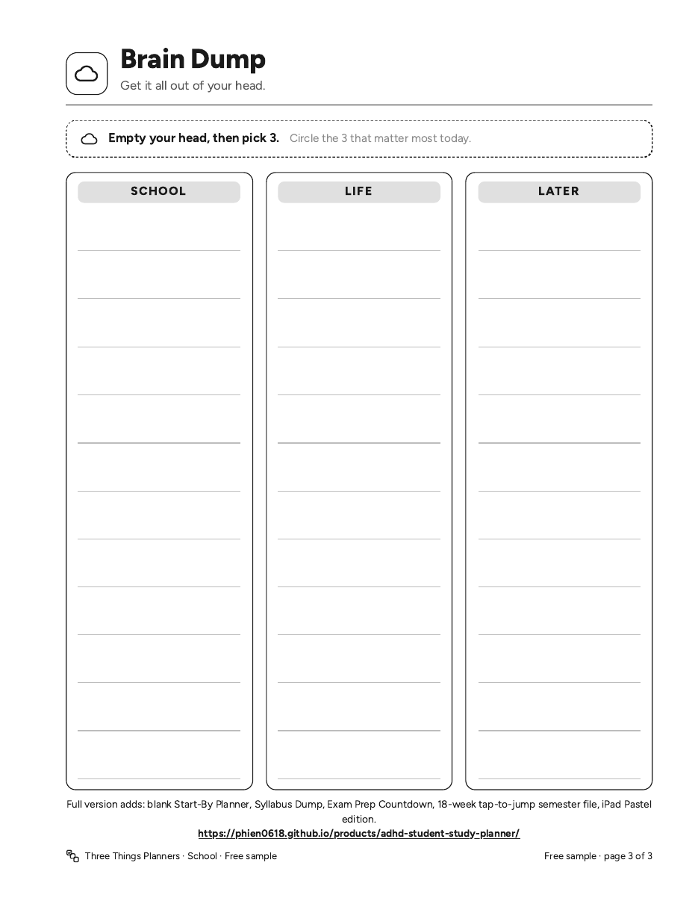
The actual free-sample PDF. If it doesn't show on your device, download the free sample here.
A screen recording of the real iPad Pastel pages in a phone-size browser viewer: Semester Index → Week 1 Plan → Mon · Week 1 → Student Planner Contents → Tasks side tab → Contents link → Start-By Planner. It was not recorded inside GoodNotes itself.
Week 1: fill the Syllabus Dump (pages 4–5). Copy anything with more than one step to the Assignment Tracker (page 9): "Due is the last day. Start by is the real deadline."
Each big assignment: a Start-By Planner (page 10). Plan right to left from the due date. Step 1's Do on day is your start-by date.
Sunday: Weekly School Plan, 3 school things for the week. Each day: Daily School Top 3. Fell behind? The Catch-Up Plan (page 28) starts with "Do these 3 first" and one email to send today, with polite email starters on page 24.
On an iPad: import the two iPad Pastel files into GoodNotes or Notability. Tap a side tab, a line on Contents or a button on the Semester Index to jump; tap Contents, Index or "Week N plan" at the bottom of a page to go back. On paper: print the black & white files at 100%. The iPad Pastel files are made for the screen, not for printing.
ADHD-friendly by design; not medical advice. It's a planning tool and makes no promises about results. Page 32 of the Student Planner prints a link to another product in our shop (the Printable Daily & Weekly Planner Pack); it is optional.
One ZIP download, ADHD-Student-Planner_All-Files.zip, with 7 PDFs. Each PDF is also listed for direct download after payment.
| File | Pages | What it is for |
|---|---|---|
| ADHD-Student-Planner_Letter.pdf | 32 | Student Planner, black & white print, US Letter 8.5 × 11 in, 60 internal links |
| ADHD-Student-Planner_A4.pdf | 32 | Student Planner, black & white print, A4 210 × 297 mm, 60 internal links |
| 18-Week-Semester_Letter.pdf | 127 | Semester Index + Weeks 1–18 (Plan, Mon–Fri, Weekend), US Letter, 468 internal links |
| 18-Week-Semester_A4.pdf | 127 | Semester Index + Weeks 1–18 (Plan, Mon–Fri, Weekend), A4, 468 internal links |
| ADHD-Student-Planner_iPad-Pastel.pdf | 32 | iPad Pastel edition with 10 side tabs on every page (for the screen), 380 internal links |
| 18-Week-Semester_iPad-Pastel.pdf | 127 | iPad Pastel edition with 7 side tabs on every page (for the screen), 1,357 internal links |
| README.pdf | 2 | File list, page map, print settings, GoodNotes / Notability steps, license, refunds |
What's in README.pdf (2 pages): which file to open for print or iPad, the page map for both files, print settings (Actual size / 100%, page ranges), GoodNotes / Notability import steps and what to do if a tap draws instead of jumping, the personal-use license and how to get a refund.
The 32 planner pages: 1 Cover · 2 Contents · 3 How to use · 4 Syllabus Dump · Classes 1–3 · 5 Syllabus Dump · Classes 4–6 · 6 Semester at a Glance · 7 Class Schedule · 8 Class Info & Contacts · 9 Assignment Tracker · 10 Start-By Planner · 11 Big Project Planner · 12 Essay Planner · 13 Weekly School Plan · 14 Daily School Top 3 · 15 Brain Dump · 16 Study Session Planner · 17 Focus Sessions Log · 18 Exam Prep Countdown · 19 Exam Topic Checklist · 20 Grade Tracker · 21 Reading Tracker · 22 Lecture Notes (Cornell) · 23 Group Project Planner · 24 Ask for Help: Email Starters · 25 Study Dopamine Menu · 26 School Wins Log · 27 Low-Energy School Day · 28 Catch-Up Plan · 29 Habit Tracker · 30 Weekly Review · 31 Notes (dot grid) · 32 Notes (lined)
The 127 semester pages: page 1 Semester Index; Week N starts on page 7N − 5. Week 1 = pages 2–8, Week 18 = pages 121–127.
Is this a physical product?
No. It's an instant digital download: 7 PDFs in one ZIP.
Which size should I print?
US Letter in the US and Canada, A4 in the UK, Australia, Europe and elsewhere. Both are included, each laid out for its own paper. Print at "Actual size / 100%". The semester file is 127 pages, so print one week at a time (Week 1 = Pages 2–8).
Do the links work in GoodNotes and Notability?
They are standard PDF internal links. If a tap draws a line instead of jumping, switch to read-only / select mode, tap the link, then switch your pen back on.
It's undated. Can I start mid-semester?
Yes. Start at the week you're in, fill the Syllabus Dump for the rest of the term, and open the Catch-Up Plan (page 28) if you're behind.
What if it doesn't work for me?
Satisfaction guarantee: email Three Things Planners support at chenphien@gmail.com within 14 days of purchase for a full refund, no questions asked. We aim to reply within 2 business days. Or try the free 3-page sample first.
Is the checkout safe?
Payment runs through Waffo Pancake, our merchant of record. It takes the payment, handles tax and emails your receipt; we never see your card details. After payment you land on the download page.
$6.00 USD, one-time payment, instant download
Buy now: $6 one-time Not sure yet? Get 3 real pages free (PDF, no email)🔒 Secure checkout by Waffo Pancake, our merchant of record: it takes the payment, handles tax and sends your receipt, and we never see your card details. Satisfaction guarantee: 14-day full refund, no questions asked. Email Three Things Planners support at chenphien@gmail.com.